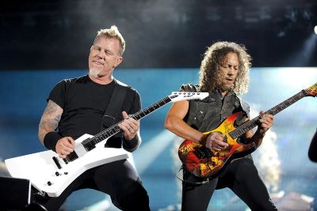
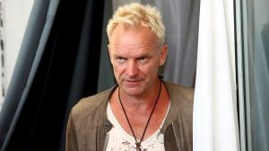

Se cumplen 10 años de la última gira oficial de El Canto del Loco
En 2019 se cumplían 10 años desde que El Canto del Loco dio su último concierto, poniendo fin a una de las giras más recordadas en la música pop-rock española.

Metallica anuncia su primer concierto de este año 2020

Green Day anuncia sus próximos lanzamientos para este 2021
Información actual

Dani Martín deja la puerta abierta a un posible regreso de El Canto del Loco en su última entrevista

Green Day habla de su nuevo disco y su concierto en Madrid

¿Qué le pasa a Sting? Última hora sobre el estado de salud del cantante a sus 73 años